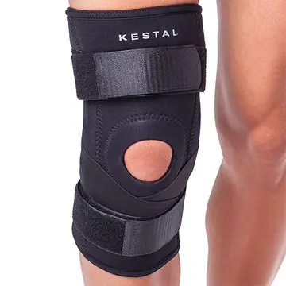
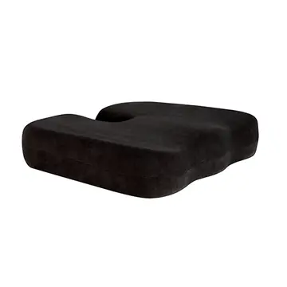
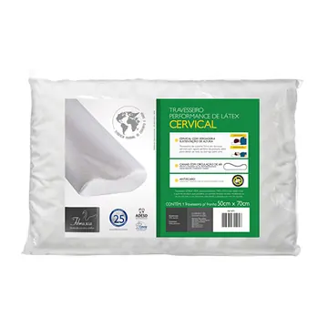
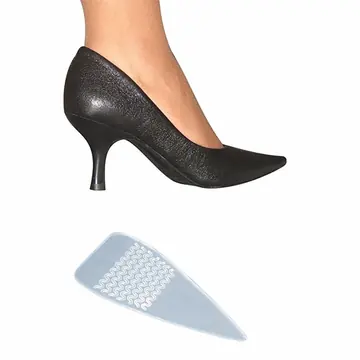
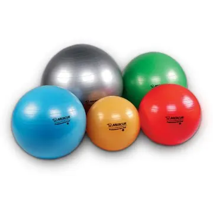

Início / Órteses e bem-estar
Órteses, travesseiros e cuidados com os pés
Órteses para coluna, membros superiores e inferiores, assentos e almofadas, travesseiros, produtos para os pés e acessórios para exercícios. Modelos e cores podem variar conforme o estoque.
Órteses e produtos ortopédicos
Protegem e apoiam o sistema locomotor, da coluna aos membros superiores e inferiores. A loja tem um profissional para a realização de órteses e próteses.

- Colar cervical de espuma P, M, G e GG
- Colar cervical Philadelphia
- Colar cervical Philadelphia com orifício para traqueo
- Joelheira articulada
- Joelheira articulada com reforço patelar
- Joelheira com reforço patelar curta
- Joelheira com reforço patelar longa
- Imobilizador de joelho P, M, G e GG
- Imobilizador de ombro
Ver mais 41 itens
- Imobilizador em oito para clavícula
- Colete Putti alto
- Colete Putti baixo P, M, G e GG
- Colete de Jewett
- Colete de Milwaukee sob medida
- Colete Spinomed IV
- Knight Taylor
- Corretor postural
- Cinta lombar 3 gomos
- Cinta abdominal lombar com hastes
- Cinta para hérnia inguinal
- Cueca para hérnia
- Faixa elástica 4 gomos
- Faixa torácica 2 gomos
- Faixa modeladora abdominal e lombar
- Lumbamed Basic
- Lumbamed Disc
- Lumbamed Plus
- Munhequeira
- Munhequeira com tala
- Munhequeira noturna para túnel do carpo
- Tala para punho bilateral
- Tala de PVC
- Tipoia estofada Velpeau
- Tipoia Velpeau infantil
- Tênis elbow
- Tira subpatelar
- Estabilizador de tornozelo
- Calha AFO flexível
- Calcanheira Pauher Support
- Sandália de Baruk para pós-operatório
- Órtese noturna para correção de joanete
- Suspensório Pavlik
- Splint duplo para dedo
- Splint para dedo
- Tala para dedo em martelo
- Dedeira em malha
- Suporte para bolsa de gel 2 alças
- Suporte lombar para bolsa de gel
- Suporte de joelho para bolsa de gel
- Massageador portátil
Assentos, almofadas e suportes
Para sofás, cadeiras, poltronas e assentos de carro, em casa ou no trabalho.

- Almofada especial protetor cóccix
- Almofada anatômica lombar
- Almofada especial com orifício
- Almofada especial Confort Seat
- Assento Soft
- Apoio Super Coluna
- Pró-coluna
- Encosto para leitura
- Almofada em gel sem orifício
Ver mais 11 itens
- Almofada em gel redonda sem orifício
- Almofada em gel redonda com orifício
- Almofada de gel com orifício
- Assento caixa de ovo para cadeira de rodas
- Colchão inflável anti-escaras
- Suporte veicular Pillow Car
- Suporte multifuncional
- Suporte para lombar
- Suporte antivarizes
- Imobilizador de tornozelo Airpauher
- Estabilizador de tornozelo Pauhercast M e G
Travesseiros
Para um sono mais tranquilo, de acordo com a necessidade de cada pessoa.

- Travesseiro Nasa Benefit 3
- Travesseiro Up
- Travesseiro Personal Mix
- Travesseiro de pescoço
- Travesseiro Pare
- Travesseiro cervical
- Travesseiro Body Pillow
- Travesseiro antissufocante infantil
- Tranquilão
- Encosto anatômico
- Almofada para banho baby
- Almofada de amamentação
Para os pés
Uma linha completa para prevenção e correção dos pés, além de sapatos anatômicos e ortopédicos.

- Almofada plantar
- Almofada plantar em gel
- Apoio plantar massageador
- Apoio plantar para metatarsalgia
- Apoio plantar para metatarsalgia com piloto
- Bolsa de gel
- Calcanheira adesiva anti-impacto
- Calcanheira Silisporte
- Calcanheira sob gel
Ver mais 22 itens
- Calcanheira terapêutica
- Chinelo ortopédico 33-40
- Corretivo de joanete para sandália de dedo
- Dedeira Siligel
- Palmilha com arco brando 2
- Palmilha com arco e piloto
- Palmilha executiva
- Palmilha Siligel com arco e barra metatarsal
- Ponteira de Siligel para bailarina
- Protetor adesivo para tendão
- Protetor de joanete em silicone
- Protetor para joanete de malha e gel
- Protetor para joanete sem alça
- Protetor para maléolos Siligel
- Protetor região plantar para olho de peixe
- Relax Foot
- Rolo Hotcold
- Sandália Total Suporte
- Separador de dedos Siligel
- Separador de joanete noturno
- Tiras adesivas para conforto Soft-Gel
- Tubo recortável em malha
Acessórios fisioterapêuticos
Para exercícios e alongamentos em casa e para o atendimento em clínica.

- Bola cravo 10 cm rígida
- Bola Orange Ball 26 cm
- Bolas para exercício 45, 55, 65, 75 e 85 cm
- Bolas para exercício de mão cravo flexível
- Cama elástica
- Colchonete 60×40
- Colchonete 120×60
- Disco de equilíbrio
- Disco inflável de equilíbrio
Ver mais 13 itens
- Espaldar de madeira
- Faixa elástica suave, média e forte
- Halteres de 500 g a 5 kg
- Kinesio tape
- Lâmpada de infravermelho
- Suporte de lâmpada de infravermelho
- Mini bike
- Prancha de quadríceps
- Puxador para faixa elástica
- Rolo de espuma pequeno, médio e grande
- Suporte para bola individual com aro metálico
- Tablado em madeira
- Tornozeleira de peso de 500 g a 5 kg
Pergunte pelo tamanho e pelo modelo
Mande o nome do produto pelo WhatsApp e a loja confirma o que tem.